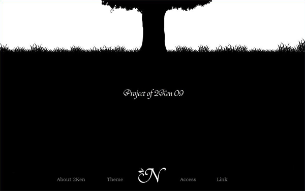
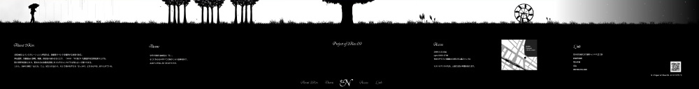
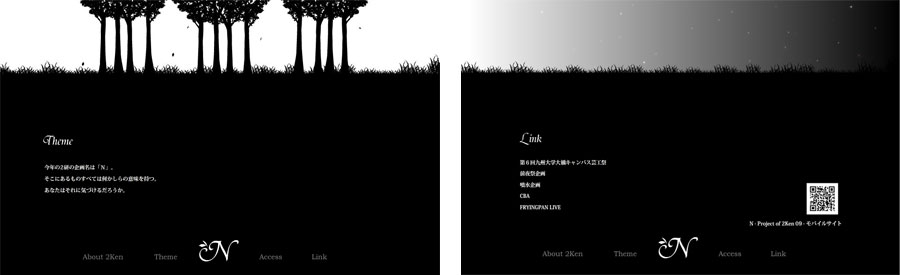

Project of 2ken09 「N」 特設Webサイト
大学の学園祭でインスタレーション（空間構成）イベントを行うサークル「2研企画」の、
2009年度の企画「N」の特設Webサイトです。

- 制作期間
- 2009年9月下旬〜10月下旬
- 使用ツール
- Illustrator / Flash / Dreamweaver
- 目的
- イベント内容がよくわからなくても、
イベントに行きたくなるwebサイト - 備考
- 3名でのグループ制作
担当箇所：企画 / Flash制作

